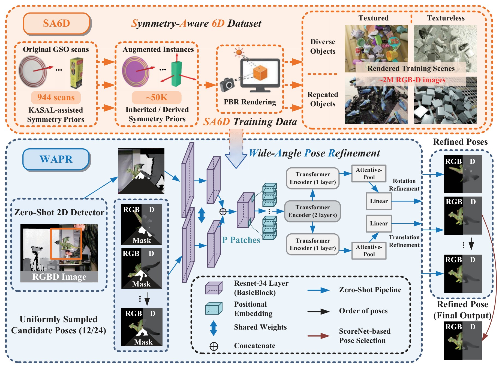

Performance and what it measures性能与测量范围
Read each speed result with its device, inference backend and candidate count. The RTX 5090, OpenGL + TensorRT FP16 measurement uses 12 candidates per instance in the warmed pose stage and excludes 2D detection and NMS. It is separate from the paper’s fast setting.
速度需结合设备、推理后端和候选数理解。RTX 5090、OpenGL + TensorRT FP16 测量使用每实例 12 个候选，测量预热后的位姿阶段，不含 2D 检测与 NMS；它与论文快速设定分别说明。
The paper reports a fast setting with as few as 12 candidates per detected instance, inference within 1 second per frame, and throughput up to 25 detected instances per second. These are paper results under its evaluation setting. The current repository default is 4 view directions × 3 in-plane rotations, three WAPR updates, then two SAPR updates. n_view and n_inplane are explicit Python choices; they describe hypotheses per forward pass, while update counts describe repeated corrections.
论文报告的快速设定以每个检测实例少至 12 条候选，实现单帧 1 秒以内推理、最高每秒 25 个检测实例的吞吐量。这是论文评测设定下的结果。当前仓库默认每个物体 4 个视线方向 × 3 次面内旋转，先做三次 WAPR 更新，再做两次 SAPR 更新。n_view 和 n_inplane 是显式 Python 选择，决定一次前向的候选数；更新次数决定反复修正多少次。
The release's OpenGL + TensorRT FP16 benchmark[5] processes 100 supplied instances in 1.11–1.14 s on RTX 5090, approximately 88–90 instances/s in the warmed batch pose stage. Each instance retains twelve hypotheses, three WAPR updates, two SAPR updates and WBPS. The measurement starts with prepared RGB-D, CADs and regions and excludes 2D detection and NMS. Application timings include different preparation and scene workloads.
发布版的 OpenGL + TensorRT FP16 实验[5]在 RTX 5090 上用 1.11–1.14 秒处理 100 个指定实例，预热后的批量位姿阶段约每秒 88–90 个实例。每实例仍使用十二个候选、三次 WAPR、两次 SAPR 与 WBPS。测量从准备好的 RGB-D、CAD 与区域开始，不含 2D 检测与 NMS。应用案例的耗时还受到输入准备与场景负载的影响。
The optional 2D front-end diagnostic measured hot GroundingDINO[1] + SAM2[3] + DINOv2[2] CAD matching at 220.7 ms median on one RTX 5090 image; FastSAM[6]-s + the same matcher took 85.0 ms. Those calls stop before 6D pose estimation. FastSAM is not the tracker in the videos, and the 2D figures do not predict full tracking latency or recovery quality.
可选 2D 前端的独立诊断在一张 RTX 5090 图像上测得：预热后调用 GroundingDINO[1] + SAM2[3] + DINOv2[2] CAD 匹配的中位数为 220.7 ms；FastSAM[6]-s 加同一匹配器为 85.0 ms。计时止于 2D 阶段，不含 6D 位姿估计。视频中的跟踪器未使用 FastSAM，这组 2D 数字也不能推算整段跟踪耗时或找回效果。
The RTX 5090 sugar-box comparison uses independent DINOv2 local6/global6 recovery at stride 32. Both methods pass on 27/29 sampled poses. Normal-update medians are 27.8 ms for WAPR and 369.1 ms for FoundationPose; full updates with search take 64.6–172.5 and 420.0–445.5 ms. Each uses its own state, candidate refinement and scorer. Ground truth is used only for evaluation. [4]Protocol and timing
RTX 5090 糖盒对照采用步长 32 的 DINOv2 独立补救，局部和全图各最多六个候选。双方均为 27/29 个采样位姿达标，常规更新中位数为 WAPR 27.8 ms、FoundationPose 369.1 ms；含搜索的完整更新为 64.6–172.5 ms 和 420.0–445.5 ms。各自使用自身状态、候选修正与评分器，真值仅用于评价。[4]协议与计时
Paper figure: training data and refinement model论文图：训练数据与位姿修正模型
This is a method figure from the paper, not a map of the documentation or every released example. Its orange top half shows how symmetry-aware SA6D training scenes are made from object scans and rendered RGB-D data. Its blue lower half shows the paper's pose path: a detected region and sampled poses enter the wide-angle refiner, which predicts rotation and translation corrections before pose selection. The released guide above adds the separate SAPR and WBPS roles, optional 2D matching, and video target-mask tracking so you can choose the right inference route.
这是一张论文方法图，并不是文档导航图，也没有覆盖发布版所有示例。橙色上半部分表示如何由物体扫描、对称先验与 RGB-D 渲染得到 SA6D 训练数据；蓝色下半部分表示论文中的位姿路径：检测区域和采样位姿进入广角位姿修正模型，由网络预测旋转与平移修正，再选择位姿。上面的使用流程另外说明了发布版 SAPR、WBPS、可选 2D 匹配和视频目标掩码跟踪各自的作用，便于选择推理入口。

References and licenses参考文献与许可
- GroundingDINO — Apache-2.0. Vendored detector source; original notices retained.随包检测源码；保留原始声明。 · GitHubGitHub · License/notice 1许可/声明 1 · License/notice 2许可/声明 2
- DINOv2 — Apache-2.0. Code and official DINOv2 weights; retain copyright and license.源码与官方 DINOv2 权重；保留版权和许可。 · GitHubGitHub · License/notice 1许可/声明 1
- SAM 2 — Apache-2.0; cctorch: BSD-3-Clause. Native source and official checkpoints; cctorch carries an additional BSD notice. Ultralytics-converted files require checking their distributor terms.原生源码与官方权重；cctorch 另附 BSD 声明。Ultralytics 转换文件还需核对分发方条款。 · GitHubGitHub · License/notice 1许可/声明 1 · License/notice 2许可/声明 2
- FoundationPose — NVIDIA custom source license. Comparison method source has a custom license; do not describe it as MIT or presume weights share the same grant.对照方法源码使用自定义许可；不能标为 MIT，也不能推定权重有相同授权。 · GitHubGitHub · License/notice 1许可/声明 1
- tensorrt-cu12 — Other/Proprietary License. Runtime dependency; dependencies and model/data assets retain their own licenses.运行依赖；依赖及模型/数据资源保留各自许可。 · GitHubGitHub · License/notice 1许可/声明 1 ↩ ↩
- FastSAM · GitHubGitHub
Model weights and dataset/task assets may have separate terms. WAPR's source license does not replace them.模型权重、数据集与任务资源可能有独立条款；WAPR 源码许可不替代这些许可。